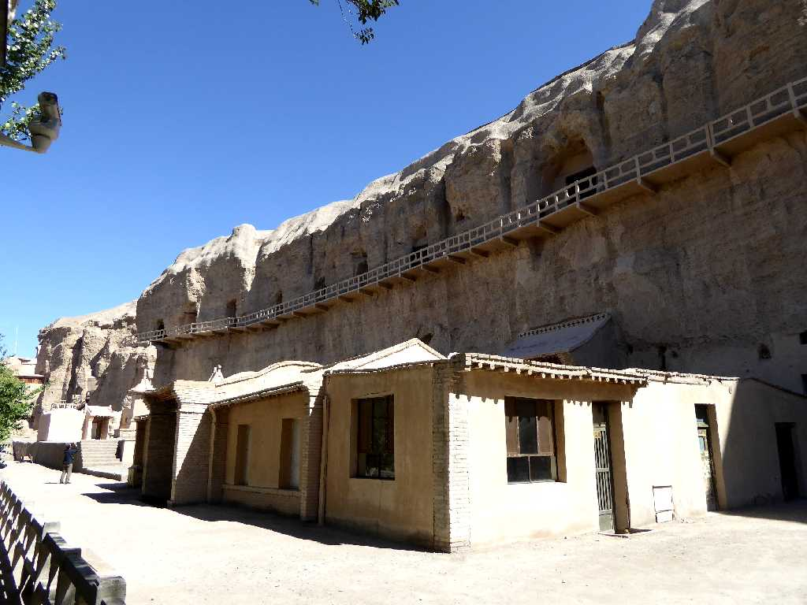
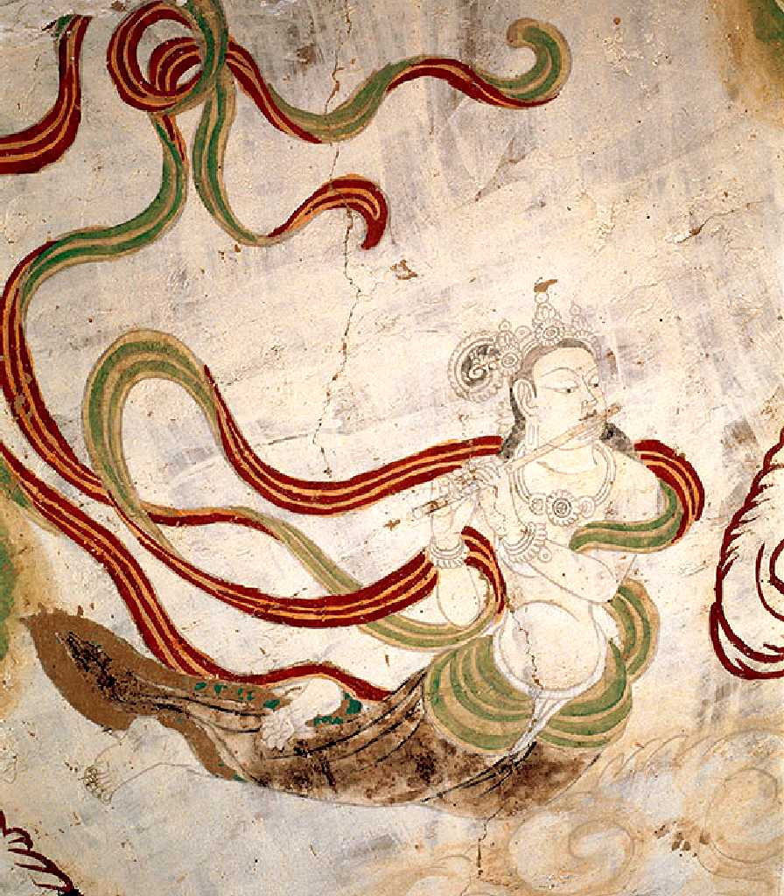
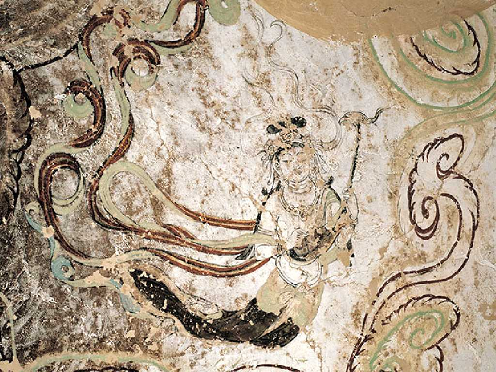
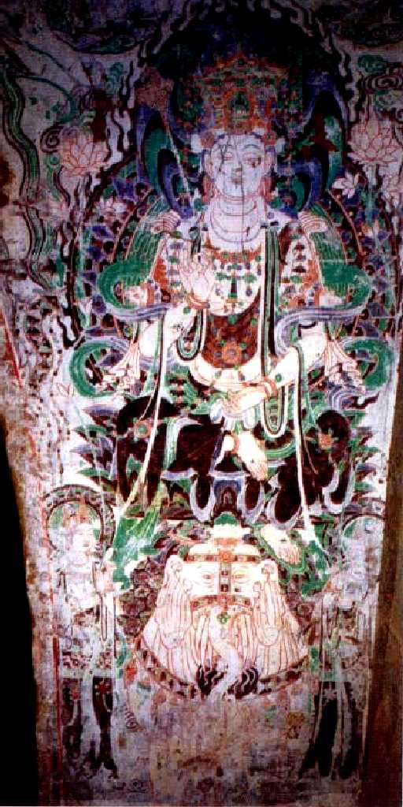
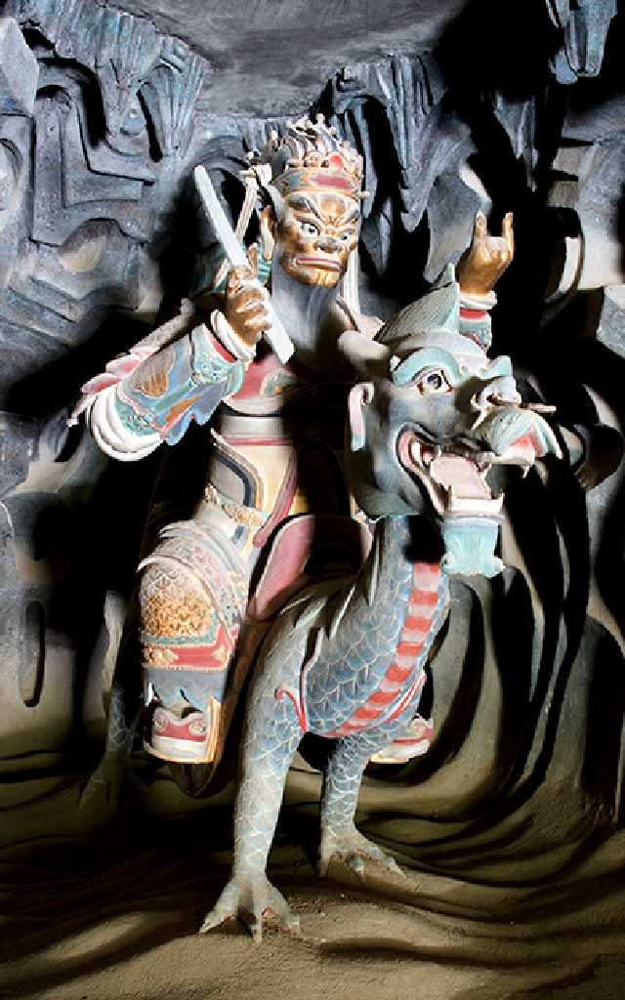
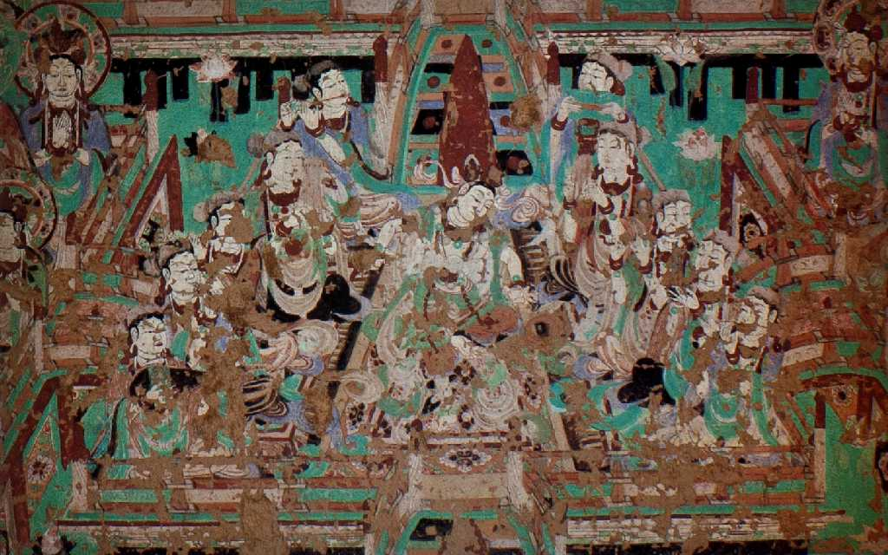
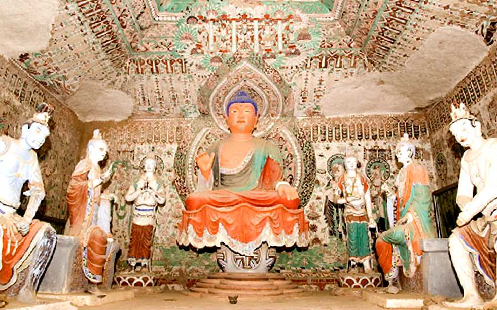
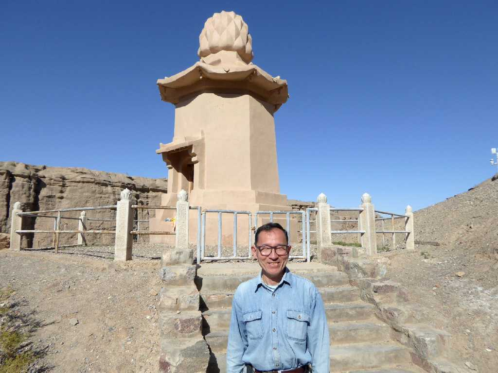

Yulin Caves Jiuquan 酒泉 楡林窟

Flying Apsara Cave 15 第１５窟 前室顶南端 吹横笛飞天 中唐
楡林窟の第１５窟の前室では美しい飛天に出会える

Cave 15 第１５窟 前室顶 凤首琴伎乐飞天 中唐

Cave 6 第６窟 二层前室东壁 普贤菩萨

Cave 11 第１１窟 东壁主龛内龙王塑像

Cave 12 第１２窟

Cave 14 第１４窟 洞窟内景

September 13 2015 Yulin Caves 楡林窟